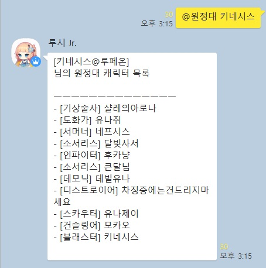

로스트아크 관련 기능 루시의 기능 중 온라인 게임 '로스트아크' 관련 기능들입니다. @하늘색: 해당 기능을 불러오는 명령어의 접두어 [분홍색]: 필수로 입력해야 하는 인자 (연두색): 생략 가능한 옵션 인자 ▶ @로아 사용법: @로아 [닉네임] 해당 로스트아크 캐릭터의 외형과 정보를 출력합니다. ※한 번 이상 검색 시, 닉네임을 생략하면 최근에 가장 많이 검색한 닉네임을 루시가 스스로 기억해서 불러옵니다. ▶ @원정대 사용법: @원정대 [닉네임] 해당 로스트아크 캐릭터의 원정대 캐릭터 목록을 출력합니다.  ※한 번 이상 검색 시, 닉네임을 생략하면 최근에 가장 많이 검색한 닉네임을 루시가 스스로 기억해서 불러옵니다. ▶ @내실 사용법: @내실 [닉네임] 해당 로스트아크 캐릭터의 수집형 컨텐츠(이하 내실) 현황을 출력합니다. ※한 번 이상 검색 시, 닉네임을 생략하면 최근에 가장 많이 검색한 닉네임을 루시가 스스로 기억해서 불러옵니다. ▶ @각인 사용법: @각인 [닉네임] 해당 로스트아크 캐릭터의 장착 각인을 출력합니다. ※한 번 이상 검색 시, 닉네임을 생략하면 최근에 가장 많이 검색한 닉네임을 루시가 스스로 기억해서 불러옵니다. ▶ @모험섬 사용법: @모험섬 프로키온의 나침반의 오늘의 모험섬을 검색합니다. ▶ @항협 사용법: @항협 오늘의 항해 협동 시간표를 출력합니다. ▶ @사사게 사용법: @사사게 [닉네임] 해당 로스트아크 닉네임을 인벤 사건사고 게시판에 검색합니다. ※앞에서부터 최대 5페이지까지만 검색하므로, 오래된 기록은 검색되지 않을 수 있습니다. ▶ @경매 사용법: @경매 [경매장시세] (파티 인원) 레이드 보상 경매의 입찰 효율을 계산합니다. 파티 인원을 생략 시, 기본 4인으로 계산합니다.